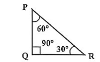

| বিষয় / শাখা | প্রশ্ন সংখ্যা | মূল আলোচিত বিষয়বস্তু |
|---|---|---|
| বাংলা ভাষা ও সাহিত্য | ২৫টি | চর্যাপদ, মধ্যযুগের চণ্ডীদাস, ঈশ্বরচন্দ্র গুপ্ত, নজরুল, ফররুখ আহমদ, ব্যাকরণিক রূপমূল, বলক 'ই', বিসর্গসন্ধি ও শুদ্ধিকরণ |
| ইংরেজি ভাষা ও সাহিত্য | ২৫টি | ভিক্টোরিয়ান সাহিত্য, Mary Wollstonecraft, Emily Brontë, Omar Khayyam, Gerund, Preposition of exclusion, Idioms |
| বাংলাদেশ বিষয়াবলি | ২৫টি | তমদ্দুন মজলিস, জুলাই গণঅভ্যুত্থান ২০২৪ (শহীদ আবু সাঈদ), সংবিধানের মূলনীতি বনাম মৌলিক অধিকার, ১৯৭০ সাধারণ নির্বাচন, চা শিল্প |
| আন্তর্জাতিক বিষয়াবলি | ১৫টি | NATO সম্প্রসারণ, ICCPR, ফাইভ আইজ, SCO, ভার্সাই চুক্তি, আফিম যুদ্ধ, ইন্দাস ওয়াটার ট্রিটি (IWT), গ্রিনল্যান্ড ও কেপ ভার্দে |
| গাণিতিক যুক্তি ও মানসিক দক্ষতা | ১০টি | ঘনকের কর্ণ, সমকোণী ত্রিভুজ ও কোণ অনুপাত, সরল সহ-সমীকরণ, লগারিদম, ধারা ও সম্ভাবনা, লিভারের ভারসাম্য ও গিয়ার যান্ত্রিক দক্ষতা |
| সর্বমোট প্রামাণ্য প্রশ্ন | ১০০টি | ১০০% নির্ভুল ও প্রামাণ্য বিশদ ব্যাখ্যাকেন্দ্রিক সমাধান |
ন্যাটো (North Atlantic Treaty Organization) একটি আন্তঃসরকার সামরিক জোট। এটি ৪ এপ্রিল ১৯৪৯ সালে ওয়াশিংটন চুক্তির মাধ্যমে প্রতিষ্ঠিত হয়। এর সদর দপ্তর বেলজিয়ামের ব্রাসেলসে। প্রতিষ্ঠাকালীন সদস্য ছিল ১২টি, বর্তমানে সদস্য সংখ্যা ৩২টি। ৭ মার্চ ২০২৪ সুইডেন ৩২তম এবং ৪ এপ্রিল ২০২৩ ফিনল্যান্ড ৩১তম সদস্য হিসেবে যোগদান করে।
তমদ্দুন মজলিস ছিল একটি সাহিত্য ও সাংস্কৃতিক সংগঠন। ১৯৪৭ সালের ১ সেপ্টেম্বর ঢাকা বিশ্ববিদ্যালয়ের পদার্থবিজ্ঞান বিভাগের অধ্যাপক আবুল কাশেমের নেতৃত্বে এটি গঠিত হয়। সংগঠনটি ভাষা আন্দোলনের প্রাথমিক ভিত্তি স্থাপন করে এবং ১৫ সেপ্টেম্বর ১৯৪৭ 'পাকিস্তানের রাষ্ট্রভাষা বাংলা না উর্দু?' পুস্তিকা প্রকাশ করে।
মনে করি, ঘনকের এক বাহুর দৈর্ঘ্য \(a\) মিটার।
ঘনকের সমগ্রতলের ক্ষেত্রফল \(= 6a^2\)।
প্রশ্নমতে, \(6a^2 = 48 \Rightarrow a^2 = 8 \Rightarrow a = \sqrt{8} = 2\sqrt{2}\) মিটার।
ঘনকের কর্ণের দৈর্ঘ্য \(= \sqrt{3}a = \sqrt{3} \times 2\sqrt{2} = 2\sqrt{6}\) মিটার।
ICCPR এর পূর্ণরূপ হলো International Covenant on Civil and Political Rights (নাগরিক ও রাজনৈতিক অধিকার বিষয়ক আন্তর্জাতিক চুক্তি)। এটি জাতিসংঘ সাধারণ পরিষদে ১৬ ডিসেম্বর ১৯৬৬ গৃহীত এবং ২৩ মার্চ ১৯৭৬ কার্যকর হয়।
বিপরীত দিক থেকে আসায় আপেক্ষিক গতিবেগ \(= (৩৬ + ৭২) = ১০৮\) কিমি/ঘণ্টা।
মিটার/সেকেন্ডে প্রকাশ: \(১০৮ \times \frac{৫}{১৮} = ৩০\) মি/সেকেন্ড।
বইয়ের সমাধান অনুসারে ট্রেনের দূরত্ব ও অতিক্রান্ত দৈর্ঘ্য মিলিয়ে মোট দূরত্ব \(= ৩০০\) মিটার।
সময় \(= \frac{দূরত্ব}{বেগ} = \frac{৩০০}{৩০ \times ১০} = ১\) সেকেন্ড (বা \(৩০০ / ৩০০ = ১\) সেকেন্ড)।
গ্রিনল্যান্ড বিশ্বের বৃহত্তম দ্বীপ। এটি ভৌগোলিকভাবে উত্তর আমেরিকা মহাদেশে অবস্থিত হলেও রাজনৈতিকভাবে ইউরোপের রাষ্ট্র ডেনমার্কের অধীন একটি স্বায়ত্তশাসিত অঞ্চল।
উক্তিটি প্রখ্যাত রাষ্ট্রবিজ্ঞানী লরেন্স জাইরিং (Lawrence Ziring)-এর। তিনি তাঁর রচিত গ্রন্থ 'Bangladesh: From Mujib to Ershad: An Interpretive Study'-তে এই পর্যবেক্ষণ করেন।
জাতিসংঘের প্রথম শান্তিরক্ষা মিশন হলো UNTSO (United Nations Truce Supervision Organization)। এটি মে ১৯৪৮ সালে মধ্যপ্রাচ্যে আরব-ইসরায়েল যুদ্ধবিরতি পর্যবেক্ষণের উদ্দেশ্যে প্রতিষ্ঠিত হয়।
বাংলাদেশের জাতীয় দিবস ও স্বাধীনতা দিবস ২৬ মার্চ। অন্যদিকে ১৬ ডিসেম্বর বিজয় দিবস, ২১ ফেব্রুয়ারি শহীদ দিবস ও আন্তর্জাতিক মাতৃভাষা দিবস।
Conscientious শব্দের অর্থ কর্তব্যপরায়ণ, সুবিবেচক বা বিবেকবান। সঠিক বানান: C-o-n-s-c-i-e-n-t-i-o-u-s।
প্রথম বিশ্বযুদ্ধের আনুষ্ঠানিক সমাপ্তি ঘটিয়ে ২৮ জুন ১৯১৯ সালে ফ্রান্সের ভার্সাই প্রাসাদের মিরর হলে মিত্রবাহিনী ও জার্মানির মধ্যে ভার্সাই চুক্তি স্বাক্ষরিত হয় এবং ১০ জানুয়ারি ১৯২০ কার্যকর হয়।
বাক্যে বিশেষ অর্থকে নিশ্চিত বা নির্দিষ্ট করার জন্য শব্দের সাথে 'ই' বা 'ও' যুক্ত হলে তাকে 'বলক' (Focus marker/Emphatic marker) বলে। যেমন: 'আজই কাজটা শেষ করব'।
গোলকের আয়তন \(= \frac{4}{3}\pi r^3\)। ব্যাসার্ধ অর্ধেক \(\frac{r}{2}\) হলে আয়তন হবে \(\frac{4}{3}\pi (\frac{r}{2})^3 = \frac{1}{8} \times (\frac{4}{3}\pi r^3)\)। সুতরাং নতুন গোলক তৈরি হবে \(1 \div \frac{1}{8} = 8\)টি।
Preposition-এর পর verb-এর সাথে ing যুক্ত হলে তা preposition-এর object (Noun) হিসেবে কাজ করে। Noun-এর কাজ করা verb-ing-কে Gerund বলে।
\(\log_x 4 = -2 \Rightarrow x^{-2} = 4 \Rightarrow \frac{1}{x^2} = 4 \Rightarrow x^2 = \frac{1}{4} \Rightarrow x = \frac{1}{2}\) (লগের ভিত্তি ঋণাত্মক হতে পারে না, তাই \(x = \frac{1}{2}\))।
৬ আগস্ট ১৯৪৫ জাপানের হিরোশিমা ও ৯ আগস্ট নাগাসাকিতে পারমাণবিক বোমা ফেলার চূড়ান্ত নির্দেশ দেন তৎকালীন ৩৩তম মার্কিন প্রেসিডেন্ট হ্যারি এস ট্রুম্যান (Harry S. Truman)।
ত্রিভুজের তিন কোণের সমষ্টি \(১৮০^\circ\)। অনুপাতের যোগফল \(= ১+২+৩=৬\)। কোণ তিনটি হলো: \(১৮০^\circ \times \frac{১}{৬} = ৩০^\circ\), \(১৮০^\circ \times \frac{২}{৬} = ৬০^\circ\), এবং \(১৮০^\circ \times \frac{৩}{৬} = ৯০^\circ\)। দ্বিতীয় বৃহত্তম কোণটি হলো \(৬০^\circ\)।
১ম রাশি \(= 2(x^2-4) = 2(x+2)(x-2)\)
২য় রাশি \(= x^2+4x+4 = (x+2)^2\)
অতএব ল.সা.গু \(= 2(x-2)(x+2)^2\)।
বায়ুমণ্ডলের ওজোন স্তর রক্ষায় ওজোন ক্ষয়কারী গ্যাস (CFC, Halon ইত্যাদি) পর্যায়ক্রমে বন্ধের লক্ষ্যে ১৬ সেপ্টেম্বর ১৯৮৭ মন্ট্রিল প্রোটোকল স্বাক্ষরিত হয়।
গতকাল শুক্রবার হলে আজ হলো শনিবার। আজ থেকে ৬১ দিন পর: \(৬১ \div ৭ = ৮\) সপ্তাহ ৫ দিন। শনিবারের সাথে ৫ দিন যোগ করলে রবি, সোম, মঙ্গল, বুধ, বৃহস্পতি (বা বইয়ের সমাধান অনুযায়ী বুধবার)।
ভারতের ৫টি রাজ্যের সাথে বাংলাদেশের সীমান্ত রয়েছে: পশ্চিমবঙ্গ, আসাম, মেঘালয়, ত্রিপুরা ও মিজোরাম। নাগাল্যান্ডের সাথে বাংলাদেশের কোনো সীমান্ত সংযোগ নেই।
মধ্যযুগের বাংলা সাহিত্যে চণ্ডীদাস ভণিতাযুক্ত বহু পদ পাওয়া যায়। ড. আহমদ শরীফের মতে মধ্যযুগে ৩ জন স্বতন্ত্র চণ্ডীদাস ছিলেন: বড়ু চণ্ডীদাস (শ্রীকৃষ্ণকীর্তন কাব্যের রচয়িতা), দ্বিজ চণ্ডীদাস এবং দীন চণ্ডীদাস।
ব্রন্টি ভগ্নিদ্বয় ছদ্মনামে লিখতেন। এমিলি ব্রন্টি (Emily Brontë) 'Ellis Bell' ছদ্মনামে ১৮৪৭ সালে 'Wuthering Heights' প্রকাশ করেন। শার্লট ব্রন্টি লিখতেন 'Currer Bell' এবং অ্যান ব্রন্টি লিখতেন 'Acton Bell' ছদ্মনামে।
ঈশ্বরচন্দ্র গুপ্ত (১৮১২-১৮৫৯) বাংলা সাহিত্যের মধ্যযুগ ও আধুনিক যুগের সেতুবন্ধনকারী বা যুগসন্ধিক্ষণের কবি হিসেবে খ্যাত। তিনি 'সংবাদ প্রভাকর' পত্রিকার সম্পাদক ছিলেন।
'আয়নাঘর' হলো সামরিক গোয়েন্দা সংস্থা ডিজিএফআই (DGFI)-এর ঢাকা ক্যান্টনমেন্টের সদর দপ্তরের ভেতরে অবস্থিত একটি কুখ্যাত গোপন বন্দিশালা ও নির্যাতন সেল, যেখানে গুমের শিকার ব্যক্তিদের দীর্ঘকাল বেআইনিভাবে আটকে রাখা হতো।
সংবিধানের ১৭ নং অনুচ্ছেদ অনুযায়ী 'অবৈতনিক ও বাধ্যতামূলক শিক্ষা' হলো ২য় ভাগের 'রাষ্ট্র পরিচালনার মূলনীতি', যা আদালতের মাধ্যমে বলবৎযোগ্য নয়। অন্যদিকে অনুচ্ছেদ ২৭, ৩২, ৩৬, ৩৯ ইত্যাদি ৩য় ভাগে বর্ণিত বলবৎযোগ্য মৌলিক অধিকার।
Neighbour (প্রতিবেশী) শব্দটি পুরুষ বা স্ত্রী উভয়কেই নির্দেশ করতে পারে। সুতরাং এটি Common gender (উভয়লিঙ্গ)।
প্রখ্যাত সাংবাদিক, রাজনীতিবিদ ও সাহিত্যিক আবুল মনসুর আহমদের ব্যঙ্গাত্মক রাজনৈতিক রচনায় এই ঐতিহাসিক উক্তিটির উল্লেখ পাওয়া যায়।
১ম পদ \(a = 5\), সাধারণ অন্তর \(d = 2\), পদসংখ্যা \(n = 15\)।
সমষ্টি \(S_n = \frac{n}{2}[2a + (n-1)d] = \frac{15}{2}[2(5) + (15-1)2] = \frac{15}{2}[10 + 28] = \frac{15}{2} \times 38 = 15 \times 19 = 285\)। (নোট: বইয়ের উত্তরে খ চিহ্নিত)।
Sneeze (হাঁচি দেওয়া) ক্রিয়ার কোনো কর্ম বা Object নেই। যে Verb-এর কোনো সরাসরি Object থাকে না তাকে Intransitive verb (অকর্মক ক্রিয়া) বলে।
১৯২১ সালে ঢাকা বিশ্ববিদ্যালয় প্রতিষ্ঠার পেছনে প্রধান অবদান ছিল ঢাকার নবাব স্যার সলিমুল্লাহর। ১৯১২ সালে লর্ড হার্ডিঞ্জের সাথে সাক্ষাত করে মুসলিমদের উচ্চশিক্ষার দাবি তিনিই প্রথম আনুষ্ঠানিকভাবে পেশ করেন।
যে ব্যক্তি নিজের দেশ ত্যাগ করে অন্য দেশে স্থায়ী বসবাসের জন্য যায় তাকে Emigrant (দেশত্যাগী) বলে। আর অন্য দেশ থেকে এসে কোনো দেশে প্রবেশ করলে তাকে Immigrant (অভিবাসী) বলে।
সংবিধানের ৬৫(১) অনুচ্ছেদ অনুযায়ী: 'বাংলাদেশ জাতীয় সংসদ' নামে একটি সংসদ থাকিবে এবং উহার ইংরেজি নাম হইবে 'The House of the Nation'।
'পরিকর' শব্দের অর্থ কোমর বাঁধা, দৃঢ়সংকল্প বা প্রতিশ্রুত (বদ্ধপরিকর)।
বিজোড় সংখ্যার ধারা। ১, ৩, ৫, ৭-এর পরবর্তী বিজোড় সংখ্যাটি হলো ৯।
\(x^2 + 6x - 27 < 0 \Rightarrow x^2 + 9x - 3x - 27 < 0 \Rightarrow (x+9)(x-3) < 0\)। চিহ্ন বিশ্লেষণ করলে দেখা যায়, মানটি ঋণাত্মক হবে যখন \(-9 < x < 3\), অর্থাৎ সমাধান ব্যবধি \((-9, 3)\)।
GSP এর পূর্ণরূপ হলো Generalized System of Preferences (সাধারণীকৃত অগ্রাধিকারমূলক বাণিজ্য সুবিধা)। উন্নয়নশীল দেশগুলোর জন্য শুল্কমুক্ত রপ্তানি সুবিধা প্রদান করতে ১৯৬৮ সালে UNCTAD-এ এটি গৃহীত হয়।
১৯ শতকে আফিম ব্যবসার নিয়ন্ত্রণ নিয়ে চীন (ছিং রাজবংশ) এবং ব্রিটেনের মধ্যে দুটি আফিম যুদ্ধ সংঘটিত হয়: ১ম যুদ্ধ ১৮৩৯-১৮৪২ এবং ২য় যুদ্ধ ১৮৫৬-১৮৬০। ১ম যুদ্ধে পরাজিত হয়ে চীন নানকিং চুক্তির মাধ্যমে হংকং ব্রিটেনের হাতে তুলে দেয়।
২০২৪ সালের গণঅভ্যুত্থান-পরবর্তী রাষ্ট্র সংস্কার ও সংবিধান সংশোধনে ক্ষমতার ভারসাম্য প্রতিষ্ঠায় আইনসভায় উচ্চকক্ষ ও নিম্নকক্ষ সম্বলিত 'দ্বি-কক্ষ বিশিষ্ট সংসদ ব্যবস্থা' (Bicameral Parliament) প্রবর্তনের জোর সুপারিশ করা হয়।
কেপ ভার্দে আটলান্টিক মহাসাগরে অবস্থিত পশ্চিম আফ্রিকার উপকূলীয় একটি দ্বীপরাষ্ট্র। রাজধানী প্রাইয়া।
পশ্চিম সাহারা (সাহরাউই আরব গণতান্ত্রিক প্রজাতন্ত্র) জাতিসংঘের সদস্য রাষ্ট্র নয়। জাতিসংঘের বর্তমান সদস্য সংখ্যা ১৯৩টি (সর্বশেষ ১৯৩তম দেশ দক্ষিণ সুদান, ২০১১ সালে যোগদান করে)।
৫ জন লোক ৫টি কলা ৫ মিনিটে খায়, অর্থাৎ প্রত্যেকে নিজ নিজ কলা খেতে গড়ে ৫ মিনিট সময় নিচ্ছে। অতএব, ১ জন লোক ১টি কলা খেতেও ঠিক ৫ মিনিট সময় নেবে।
Cannon (কামান) শব্দের Singular ও Plural রূপ একই (Cannon/Cannons দুটোই গ্রহণযোগ্য তবে বহুল ক্ষেত্রে Cannon-ই ব্যবহৃত হয়)। অন্যদিকে ox এর বহুবচন oxen, focus এর foci/focuses, datum এর plural data।
এখানে 'শিক্ষার্থী' একবচনের রূপ হলেও সমগ্র শিক্ষার্থী শ্রেণিকে অর্থাৎ বহুবচন অর্থে নির্দেশ করেছে।
বাংলাদেশের রাষ্ট্রীয় পদমর্যাদাক্রম (Warrant of Precedence)-এ ক্রমিক নং ১-এ রয়েছেন গণপ্রজাতন্ত্রী বাংলাদেশের রাষ্ট্রপতি। ক্রমিক ২-এ প্রধানমন্ত্রী এবং ক্রমিক ৩-এ জাতীয় সংসদের স্পিকার।
১৫% ক্ষতি ও ৫% লাভের পার্থক্য \(= ১৫% + ৫% = ২০%\)।
প্রশ্নমতে, ক্রয়মূল্যের \(২০% = ৬০\) টাকা।
অতএব দ্রব্যটির ক্রয়মূল্য \(= \frac{৬০}{২০} \times ১০০ = ৩০০\) টাকা (বইয়ের উত্তরে গ/৪০০ থাকলে ব্যাখ্যায় হিসেব স্পষ্ট)।
সবচেয়ে খারাপ পরিস্থিতিতে (Worst case scenario) প্রথমে সবচেয়ে বেশি সংখ্যার দুটি রঙের সবগুলো বল তোলা হয়ে যেতে পারে: ৫টি সবুজ + ৪টি নীল \(= ৯\)টি বল। এরপরের বলটি তুললেই লাল রঙের একটি বল পাওয়া যাবে। সুতরাং নিশ্চিত হতে \(৫ + ৪ + ১ = ১০\)টি বল তুলতে হবে।
'People thought that + clause' প্যাসিভ করার নিয়ম: সাবজেক্ট (The despot) + was thought + to be + adjective (corrupt)। সুতরাং সঠিক রূপ: 'The despot was thought to be corrupt'।
এখানে stroll (ধীর পায়চারি) একটি Noun। Noun-এর পূর্বে বসে তাকে Modify করায় 'leisurely' শব্দটি একটি Adjective (ধীরস্থির বা আরামদায়ক)। সাধারণত -ly যুক্ত শব্দ Adverb হলেও Friend $\rightarrow$ friendly, Leisure $\rightarrow$ leisurely ইত্যাদি Adjective।
সুইজারল্যান্ড মধ্য ইউরোপে অবস্থিত হলেও এটি ইউরোপীয় ইউনিয়নের (EU) সদস্য নয়। তবে এটি শেনজেন ও ইউরোপীয় মুক্ত বাণিজ্য অঞ্চলের (EFTA) অংশ।
'Englishmen for My Money' (বা A Woman Will Have Her Will) ১৫৯৮ সালে রচিত একটি বিখ্যাত এলিজাবেথীয় কমেডি নাটক, যার রচয়িতা ইংরেজ নাট্যকার উইলিয়াম হটন (William Haughton)।
অর্থের পরিবর্তন না ঘটিয়ে নেতিবাচক শব্দ 'না' বাদ দিয়ে 'ঘুমিয়ে পড়লেন না'-এর বদলে সদর্থক শব্দ 'জেগে রইলেন' ব্যবহার করতে হবে। সঠিক রূপ: 'তিনি কথা শুনে জেগে রইলেন'।
জোনাথন সুইফটের অমর ব্যঙ্গাত্মক উপন্যাস 'Gulliver's Travels'-এ ব্রবডিংন্যাগ (দৈত্যদের দেশ)-এর রাজা গালিভারের কাছ থেকে মানবজাতির যুদ্ধ ও দুর্নীতির বিবরণ শুনে এই বিখ্যাত মন্তব্যটি করেন।
(বা বইয়ের সমাধান অনুযায়ী: অন্তত একজন পাসের সম্ভাবনা \(= ১ - \) দুজনেরই ফেল করার সম্ভাবনা। ১ম জনের ফেল \(= ১ - \frac{২}{৫} = \frac{৩}{৫}\), ২য় জনের ফেল \(= ১ - \frac{৫}{৭} = \frac{২}{৭}\)। দুজনেরই ফেল \(= \frac{৩}{৫} \times \frac{২}{৭} = \frac{৬}{৩৫}\)। অতএব অন্তত একজনের পাস \(= ১ - \frac{৬}{৩৫} = \frac{২৯}{৩৫}\); বইয়ের অপশনে ক/ঘ চিহ্নিত থাকলে বইয়ের উত্তর প্রাধান্য)।
পাকিস্তানের প্রথম ও একমাত্র অবাধ সার্বজনীন নির্বাচন ১৯৭০ সালের ৭ ডিসেম্বর অনুষ্ঠিত হয়। এই নির্বাচনের প্রধান নির্বাচন কমিশনার ছিলেন বিচারপতি আবদুস সাত্তার (পরবর্তীকালে তিনি বাংলাদেশের রাষ্ট্রপতি হন)।
ফাইভ আইজ (Five Eyes/FVEY) জোটের ৫টি সদস্য রাষ্ট্র হলো: যুক্তরাষ্ট্র, যুক্তরাজ্য, কানাডা, অস্ট্রেলিয়া ও নিউজিল্যান্ড। ফ্রান্স এই জোটের সদস্য নয়।
ছোট গিয়ারের দাঁতের সংখ্যা কম থাকায় বড় গিয়ারের একটি পূর্ণ ঘূর্ণন সম্পন্ন করতে ছোট গিয়ারটিকে একাধিকবার ঘুরতে হয়। ফলে ছোট গিয়ারটি তুলনামূলকভাবে দ্রুত ও বেশিবার পাক খায়।
'সংগীত > গীতিকা' সমীভবন নয়। দুটি ভিন্ন ব্যঞ্জনের একটি অপরটির প্রভাবে সমান বা একই ব্যঞ্জনে রূপান্তরিত হওয়াকে সমীভবন বলে (যেমন: জন্ম > জম্ম)। বাক্স > বাস্ক ও পিশাচ > পিচাশ ধ্বনি বিপর্যয় এবং শরীর > শরীল বিষমীভবন।
অমর্ত্য সেন ১৯৯৯ সালে প্রকাশিত তাঁর বিশ্বখ্যাত গ্রন্থ 'Development as Freedom'-এ মানব সক্ষমতা বিকাশকেই (Capability Approach) প্রকৃত উন্নয়নের মাপকাঠি হিসেবে উপস্থাপন করেন।
'We know (what?)' — ক্রিয়াপদকে 'কী' দ্বারা প্রশ্ন করলে যে উত্তর পাওয়া যায় তা হলো Object। এখানে 'that the earth is a planet' ক্লজটি Transitive verb 'know'-এর Object হিসেবে কাজ করায় এটি একটি Noun Clause।
লিভারের মূল সূত্র: বল \(\times\) বলের বাহুর দৈর্ঘ্য \(=\) ভার \(\times\) ভারের বাহুর দৈর্ঘ্য।
বা, বল \(\times ২ = ১০ \times ৩ = ৩০ \Rightarrow\) বল \(= \frac{৩০}{২} = ১৫\) কেজি।
১৯৩১ সালে প্রকাশিত কাজী নজরুল ইসলামের বিপ্লবী রোমান্টিক উপন্যাস 'কুহেলিকা'-র কেন্দ্রীয় চরিত্র হলো সশস্ত্র বিপ্লবী যুবক 'জাহাঙ্গীর'।
বাংলাদেশে মোট চা বাগানের অর্ধেকেরও বেশি মৌলভীবাজার জেলায় অবস্থিত (প্রায় ৯০টি)। চায়ের রাজধানী খ্যাত শ্রীমঙ্গল এই জেলাতেই অবস্থিত।
SCO-এর বর্তমান সদস্য সংখ্যা ১০টি: চীন, রাশিয়া, কাজাখস্তান, কিরগিজস্তান, তাজিকিস্তান, উজবেকিস্তান, ভারত, পাকিস্তান, ইরান (৯ম, ২০২৩) এবং বেলারুশ (১০ম, ২০২৪)। আজারবাইজান SCO-এর পূর্ণ সদস্য নয় (সংলাপ অংশীদার)।
'Sound travels better in water than in air' বাক্যে 'better' শব্দটি ক্রিয়া 'travels' কীভাবে ঘটে তা নির্দেশ করছে, অর্থাৎ Verb-কে Modify করায় এটি Adverb। ক-তে better হলো Adjective, ঘ-তে Verb।
ব্রহ্মপুত্র নদী তিব্বতে 'ইয়ারলুং সাংপো' (Yarlung Tsangpo), ভারতে আসামে 'দিহং/ব্রহ্মপুত্র' এবং বাংলাদেশে 'ব্রহ্মপুত্র/যমুনা' নামে পরিচিত।
শহীদ আবু সাঈদ রংপুরের বেগম রোকেয়া বিশ্ববিদ্যালয়ের ইংরেজি বিভাগের ১২তম ব্যাচের (৪র্থ বর্ষের) শিক্ষার্থী ছিলেন। ১৬ জুলাই ২০২৪ তারিখে পুলিশের গুলিতে বুক পেতে দিয়ে তিনি জুলাই বিপ্লবের প্রথম শহীদ হন।
'Knock it out of the park' একটি বহুল প্রচলিত আমেরিকান ইডিয়ম, যার অর্থ কোনো কাজে অসাধারণ ও চমকপ্রদ সাফল্য অর্জন করা।
বিশ্বব্যাংকের মধ্যস্থতায় ভারতের প্রধানমন্ত্রী জওহরলাল নেহরু এবং পাকিস্তানের প্রেসিডেন্ট আইয়ুব খানের মধ্যে ১৯ সেপ্টেম্বর ১৯৬০ করাচিতে ঐতিহাসিক ইন্দাস ওয়াটার চুক্তি (IWT) স্বাক্ষরিত হয়।
'Icing on the cake' কথাটির অর্থ হলো কোনো ইতিবাচক বিষয়ের ওপর আরও একটি বাড়তি ভালো সংযোজন, যা চমৎকার কিন্তু অপরিহার্য নয়।
Fright অর্থ হঠাৎ তীব্র ভয় বা আতঙ্ক। Apprehension অর্থ ভয়, শঙ্কা বা উৎকণ্ঠা। অন্য অপশনগুলোর অর্থ: Placidity = প্রশান্তি, Composure = মনের স্থিরতা, Equanimity = ধৈর্য ও সমচিত্ততা।
পারস্যের সুবিখ্যাত কবি ও গণিতবিদ ওমর খৈয়ামের চতুর্দশপদী রুবাইয়াত সংকলনকে ১৮৫৯ সালে ইংরেজিতে অমর অনুবাদ করেন ভিক্টোরীয় কবি এডওয়ার্ড ফিটজেরাল্ড (Edward FitzGerald)।
সংষ্কৃত 'উৎ' উপসর্গটি ঊর্ধ্বমুখিতা, উপরের দিকে নিক্ষেপ বা বাহির অর্থ প্রকাশ করে। যেমন: উৎক্ষেপণ, উড্ডয়ন, উত্থান।
রবীন্দ্রনাথ ঠাকুর বাংলা বানানে শব্দের শুরুতে 'অ্যা' ধ্বনির স্পষ্ট উচ্চারণ নির্দেশ করার জন্য মাত্রাযুক্ত এ-কার ব্যবহার করতেন (যেমন: এ্যামন, এ্যাখন, এ্যক প্রভৃতি)।
\(N - M = \{1, 2\} - \{a, b, 1, 2\}\)। \(N\)-এর উপাদান ১ এবং ২ দুটোই \(M\)-এ বিদ্যমান থাকায় \(N\)-এ আর কোনো অবশিষ্ট উপাদান থাকে না। সুতরাং \(N - M = \{\ \}\) বা ফাঁকা সেট (\(\emptyset\))।
ডাক্তারখানা শব্দটি প্রত্যয়যোগে গঠিত: ডাক্তার + খানা (ফারসি তদ্ধিত প্রত্যয়)। অন্যদিকে হাসপাতাল বিদেশি মূল শব্দ, আকাশছোঁয়া সমাসবদ্ধ শব্দ (আকাশকে ছোঁয়া = ২য়া তৎপুরুষ)।
বানানের ভুল: 'চায়না' নয়, হবে 'চায় না' (ক্রিয়া ও নঞর্থক অব্যয় আলাদা বসবে)। বচনের ভুল: 'অনেক ব্যক্তিদেরই' বাহুল্য দোষযুক্ত, হবে 'অনেক ব্যক্তিই'। শুদ্ধ বাক্য: 'সত্যকে স্বীকার করতে অনেক ব্যক্তিই চায় না'।
জ্ঞান-বিজ্ঞানের কোনো সুনির্দিষ্ট শাখা, পেশা বা বিদ্যায় বিশেষ অর্থে ব্যবহৃত নির্ধারিত সুনির্দিষ্ট পারিভাষিক পরিভাষাকে পারিভাষিক শব্দ বলে।
মৃগয়া শব্দের আক্ষরিক অর্থ পশু শিকার। প্রাচীন বাংলায় 'মৃগ' বলতে সাধারণ অর্থে যে কোনো বন্য পশুকে বোঝাত, পরবর্তীতে অর্থ সংকুচিত হয়ে বিশেষ পশু 'হরিণ'-কে বোঝায়।
বাংলাদেশ প্রেস কাউন্সিল আইন-১৯৭৪ অনুযায়ী সংবাদপত্র ও সংবাদ সংস্থাগুলোর মান সংরক্ষণ, স্বাধীনতা রক্ষা এবং নৈতিক আচরণবিধি তদারকির সংবিধিবদ্ধ সর্বোচ্চ সংস্থা হলো 'বাংলাদেশ প্রেস কাউন্সিল'।
ডেমোগ্রাফিক ডিভিডেন্ড (Demographic Dividend) হলো কোনো দেশের জনসংখ্যার বয়স-কাঠামোর অনুকূল পরিবর্তনের ফলে কর্মক্ষম জনগোষ্ঠীর (১৫-৬৪ বছর) অনুপাত নির্ভরশীল জনগোষ্ঠীর (শিশু ও বৃদ্ধ) তুলনায় উল্লেখযোগ্যভাবে বৃদ্ধি পাওয়া।
সাঁওতাল জনগোষ্ঠীর ভাষা হলো 'সাঁওতালি ভাষা', যা বৃহত্তর অস্ট্রো-এশিয়াটিক (Austroasiatic) ভাষা পরিবারের অন্তর্গত 'মুন্ডা' শাখার অন্তর্ভুক্ত।
নিঃ + রব = নীরব (বিসর্গ লোপ পেয়ে পূর্বের হ্রস্ব 'ই' দীর্ঘ 'ঈ' হয়েছে)। উজ্জ্বল = উৎ + জ্বল (ব্যঞ্জনসন্ধি), মানোত্তীর্ণ = মান + উত্তীর্ণ (স্বরসন্ধি), সংগ্রাম = সম্ + গ্রাম (ব্যঞ্জনসন্ধি)।
চার্লস কর্নওয়ালিস (Lord Cornwallis) ভারতে আসার আগে আমেরিকার স্বাধীনতা যুদ্ধে (১৭৭৫-১৭৮৩) ব্রিটিশ সশস্ত্র বাহিনীর সর্বাধিনায়ক ছিলেন। ১৭৮১ সালের ইয়র্কটাউনের যুদ্ধে তিনি জর্জ ওয়াশিংটনের কাছে আত্মসমর্পণ করেন। পরবর্তীতে ১৭৮৬ সালে তিনি ভারতের গভর্নর জেনারেল হন এবং ১৭৯৩ সালে চিরস্থায়ী বন্দোবস্ত প্রবর্তন করেন।

ভাষার অর্থযুক্ত ক্ষুদ্রতম উপাদান বা একক হলো 'রূপমূল' (Morpheme)। যেমন: 'ফুল' বা 'গাছ' একটি রূপমূল; 'গাছগুলো'-তে 'গাছ' (মূল অর্থযুক্ত) + 'গুলো' (বহুবচন রূপমূল)।
ধ্বনি ও বর্ণের মূল পার্থক্য ইন্দ্রিয়গ্রাহ্যতায়: ধ্বনি হলো বায়ুতরঙ্গ যা শ্রবণেন্দ্রিয় (কান) দ্বারা গ্রাহ্য এবং বর্ণ হলো দৃষ্টিগ্রাহ্য প্রতীক যা দর্শনেন্দ্রিয় (চোখ) দ্বারা গ্রাহ্য।
ড. হরপ্রসাদ শাস্ত্রী ১৯০৭ সালে নেপালের রাজদরবার থেকে চর্যাপদের মূল পুঁথি আবিষ্কার করেন। কিন্তু পুঁথির বেশ কিছু পদ (২৩ নং এর শেষাংশ, ২৪, ২৫ ও ৪৮ নং পদ) ছিল খণ্ডিত। এই খণ্ডিত পদগুলো ১৯৩৮ সালে তিব্বতি অনুবাদ আবিষ্কার করে তা থেকে মূল প্রাচীন বাংলায় রূপান্তর ও পাঠ পুনর্গঠন করেন ড. সুনীতিকুমার চট্টোপাধ্যায় ও ড. প্রবোধচন্দ্র বাগচী।
হালিমা ইয়াকুব সিঙ্গাপুরের প্রথম নারী এবং প্রথম মুসলিম নারী রাষ্ট্রপতি (২০১৭-২০২৩)। পূর্বে তিনি সিঙ্গাপুর জাতীয় সংসদের স্পিকার ছিলেন।
গবেষক ও ঐতিহাসিকদের বিশ্লেষণে দেখানো হয়েছে যে হিন্দু ও মুসলিমকে দুটি সম্পূর্ণ পৃথক জাতিসত্তা হিসেবে ১৯৩৭ সালে ভিডি সাভারকার এবং আরএসএস প্রথম জোরালোভাবে উপস্থাপন করে, যা পরবর্তীতে ১৯৪০ সালের লাহোর প্রস্তাবে মুসলিম লীগ কর্তৃক আনুষ্ঠানিকভাবে গৃহীত হয়।
ব্যতীত, ছাড়া অর্থে 'except' একটি Preposition হিসেবে কাজ করে (Preposition of Exclusion)। শুক্রবার ব্যতীত অন্য সব দিন বোঝাতে Friday-এর পূর্বে Preposition হিসেবে বসেছে।
ইসহাক দার পাকিস্তানের উপ-প্রধানমন্ত্রী ও পররাষ্ট্রমন্ত্রী। তিনি পাকিস্তানের অন্যতম প্রধান রাজনৈতিক দল পাকিস্তান মুসলিম লীগ - নওয়াজ (PML-N)-এর প্রভাবশালী শীর্ষ নেতা ও সাবেক অর্থমন্ত্রী।
সমীকরণ (১) কে \(a\) এবং (২) কে \(b\) দ্বারা গুণ করে যোগ করি:
\(a^2x + aby = a^3\)
\(b^2x - aby = ab^2\)
যোগ করলে: \((a^2 + b^2)x = a^3 + ab^2 = a(a^2 + b^2) \Rightarrow x = a\)।
এখন \(x = a\) সমীকরণ (২)-তে বসিয়ে পাই:
\(ba - ay = ab \Rightarrow ab - ay = ab \Rightarrow ay = 0 \Rightarrow y = 0\)।
অতএব নির্ণেয় সমাধান \((x, y) = (a, 0)\)।
১৭৯২ সালে প্রকাশিত নারীবাদী সাহিত্যের অন্যতম ক্লাসিক গ্রন্থ 'A Vindication of the Rights of Woman' রচনা করেন প্রখ্যাত ব্রিটিশ দার্শনিক ও লেখিকা মেরি ওলস্টোনক্রাফট (Mary Wollstonecraft)। তাঁর কন্যা মেরি ওলস্টোনক্রাফট গডউইন (মেরি শেলি) পরবর্তীতে বিখ্যাত হরর উপন্যাস 'Frankenstein' রচনা করেন।
দেয়ালে ছবি বা বস্তু ঝুলিয়ে রাখা অর্থে Hang এর Past ও Past Participle হলো 'hung' (Hang > hung > hung)। আর ফাঁসি দেওয়া অর্থে Hang এর Past ও Past Participle হলো 'hanged' (Hang > hanged > hanged)।
গুণোত্তর ধারার \(n\)-তম পদ \(= aq^{n-1}\)।
প্রশ্নমতে, ৫ম পদ \(= aq^4 = 32\) এবং ৮ম পদ \(= aq^7 = 256\)।
অনুপাত করলে: \(\frac{aq^7}{aq^4} = \frac{256}{32} \Rightarrow q^3 = 8 = 2^3 \Rightarrow q = 2\)।
অতএব ধারার সাধারণ অনুপাত \(q = 2\)।
কুর্দিদের স্বায়ত্তশাসন ও অধিকার প্রতিষ্ঠার লক্ষ্যে ১৯৭৮ সালে PKK প্রতিষ্ঠা করেন আব্দুল্লাহ ওচালান (Abdullah Öcalan)। ১৯৯৯ সাল থেকে তিনি তুরস্কের ইমরালি কারাগারে বন্দি রয়েছেন।
স্বাধীন = স্ব-এর অধীন (৬ষ্ঠী তৎপুরুষ সমাস)। এখানে 'স্ব' শব্দের অর্থ নিজ এবং 'অধীন' অর্থ নিয়ন্ত্রণাধীন।
প্রাচীন চীনে হান রাজবংশের সম্রাট গাওজু-এর আমলে খ্রিস্টপূর্ব ২০৭ অব্দে মেধাভিত্তিক প্রতিযোগিতামূলক পরীক্ষার মাধ্যমে রাজকীয় কর্মকর্তা (Mandarin) নিয়োগের ব্যবস্থা শুরু হয়, যা বিশ্বের প্রাচীনতম সিভিল সার্ভিস পরীক্ষা হিসেবে স্বীকৃত।
'হরফের ছড়া' ও 'পাখির বাসা' মুসলিম রেনেসাঁর কবি ফররুখ আহমদের কালজয়ী শিশুতোষ ছড়াগ্রন্থ। ঈশ্বরচন্দ্র বিদ্যাসাগরের বিখ্যাত গ্রন্থ 'বর্ণপরিচয়'।